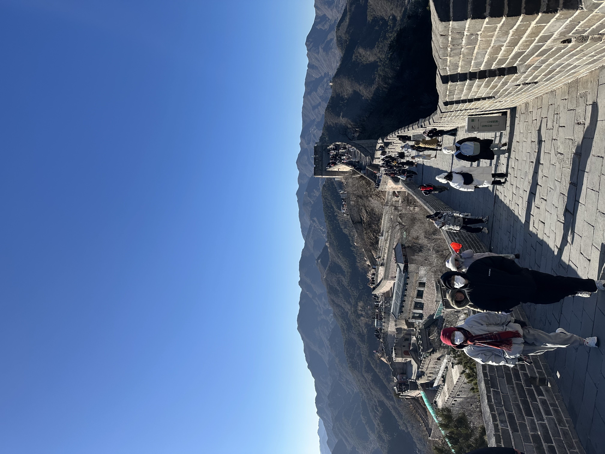
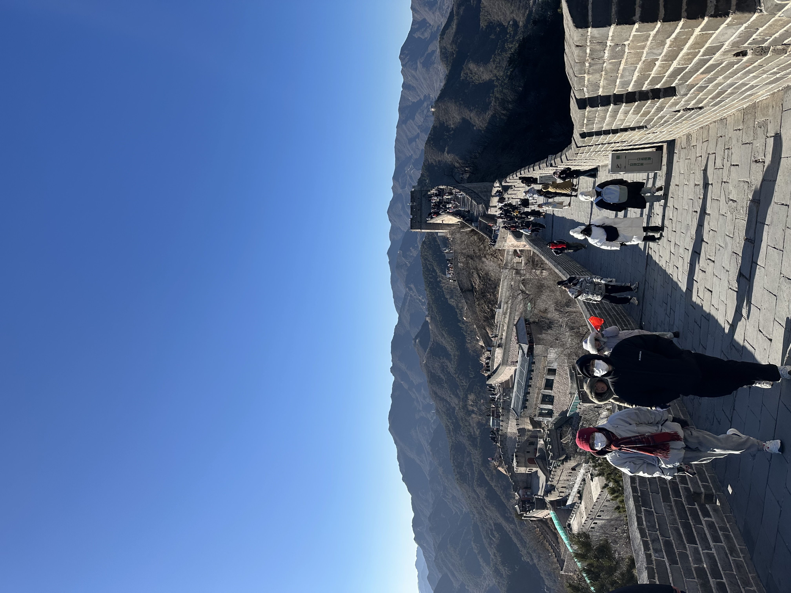
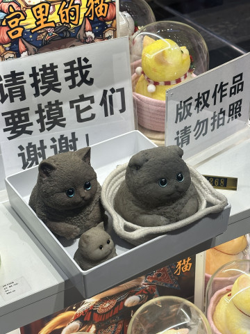
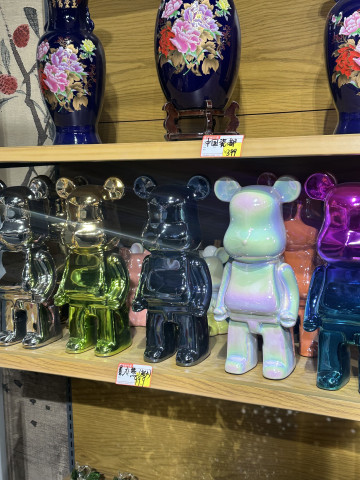
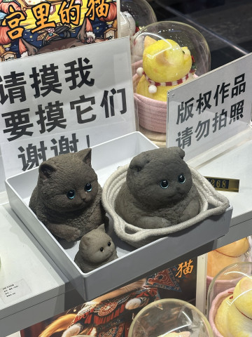
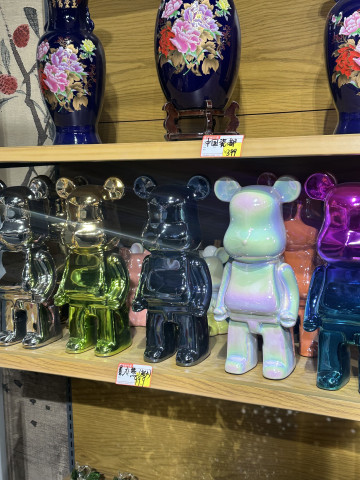
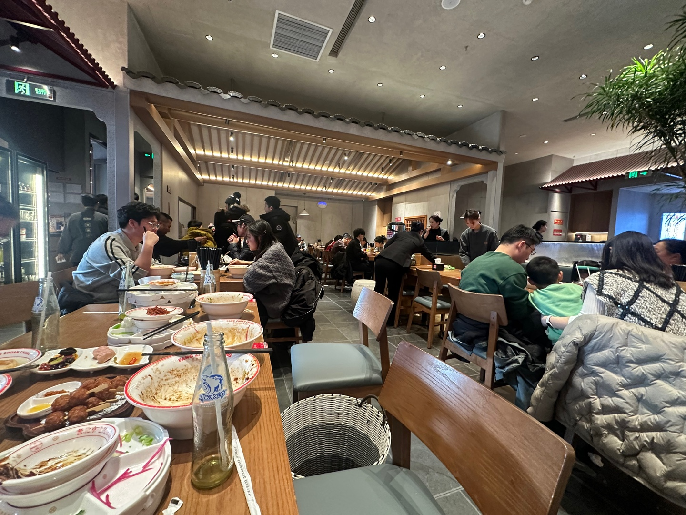
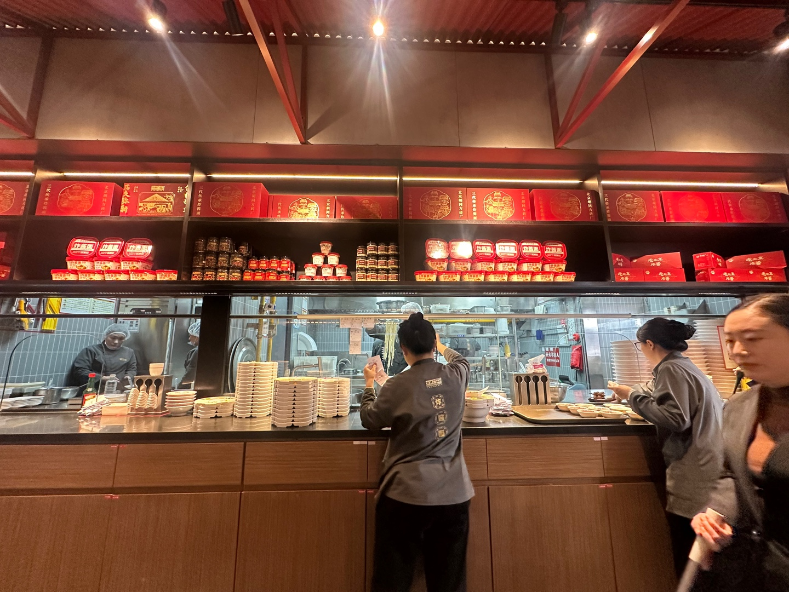
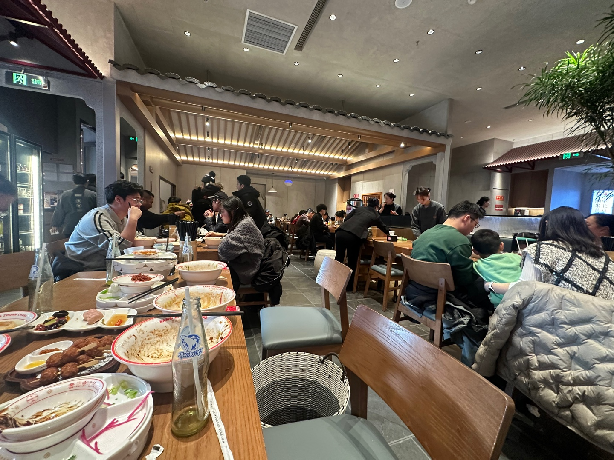
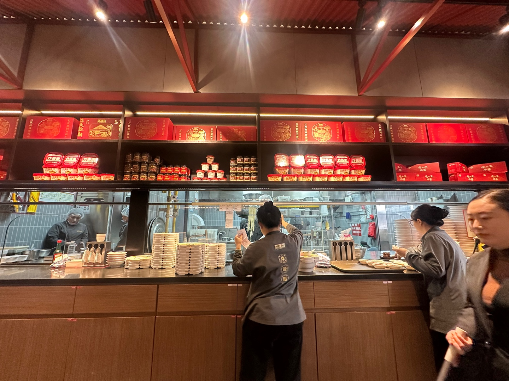

🐼 중국 여행
(2025-01-04 ~ 2025-01-09)
📍 방문한 주요 장소
1. 天坛公园 - 천단공원
입장료 : 10RMB(비수기), 15RMB(성수기)
*내부 명소 입장료 별도 +20RMB
천단공원 명소는 공원 안에 있음
공원에 입장할 때 명소티켓이랑 같이 구매하면 28CNY에 구매 가능
천단은 하늘에 제사를 지내던 제단이라고 한다.
산책하면서 약간 경주대릉원이랑 비슷하다는 느낌이 듬
2. 王府井大街 - 왕푸징 거리
내가 원했던 건 벌레튀김 같이 특이한 음식을 판매하는 걸
보길 원했는데 없어졌다고 한다...
거리가 깔끔하고, 상하이의 난징동루 작은버전 느낌
3. 八达岭长城 - 팔달령장성
 

입장료 : 40RMB
만리장성 볼 수 있는 곳은 여러 곳이 있는데, 우리는 팔달령으로 정했다.
버스 요금은 12RMB? 저렴했던 것으로 기억함.
우육면 먹고 올라감(맛있지는 않음)
겨울에 갔는데 추워 죽는줄 알았음, 따뜻하게 입고 가야함!
4. 颐和园 - 이화원
입장료 : 20RMB
황족을 위해 조성된 정원이라고 한다.
엄청 넓음
5. 天安门 - 천안문
입장료 : 아마 무료였던걸로 기억함
인상 깊었던 곳. 중국 주석의 권위가 느껴졌음.
사진 찍고 있는데, 공안 4~5명이 다가와
휴대폰 검사하면서 엄격하게 관리했음.
확인하고 이 정도는 괜찮다고 보내줬는데, 좀 쫄았다..
6. Universal Beijing Resort
입장료 : 83,000원(Klook)
유니버셜 베이징에만 있는 쿵푸팬더를 보러옴
중국 오기전에 쿵푸팬더 영화에서 봤던 장면을 볼 수 있어서 좋았다.
놀이기구는 재미있었지만, 추운 날씨에 1~2시간씩
기다리려니 약간 힘들었음
해리포터 테마는 데자뷰를 보는 줄 알았다
USJ랑 엄청 똑같다는 느낌이 들었음
7. 紫禁城 - 자금성
입장료 : 40RMB
어플로 예약해야 입장 가능. 월요일 휴무
자금성(The Forbidden City)은 '금지된 도시'라고도 부르는데,
일반 백성은 들어갈 수 없는 황제의 공간이라고 한다.
공간 자체가 엄청 크다. 과장하면 내가 미니언즈가 된 느낌.
8. 景山公园 - 경산공원
입장료 : 2RMB
경산공원 꼭대기에는 사람이 좀 많았는데,
입구 주변에는 엄청 조용했다.
항상 사람이 너무 곳을 많이 가서 그런지,
그 조용한 공간에서 산책하는게 너무 좋았다.
9. 베이징 동물원
입장료 : 14RMB? 였던 걸로 기억
판다 보는 곳에만 많은 사람들이 몰려 있었고,
인터넷 방송으로 송출하고 있는 사람도 많았음.
판다 외에는 사람들이 거의 없어 편히 구경하고 왔다.
10. 전문대가
 




밤에 구경하러 감,
반짝이는 건물들이 너무 예뻤다.
골목 길로 가면 길거리에서 인터넷 방송하는 사람들이 엄청 많았는데,
유튜브에서 보던 걸 직접보니 신기했다.
🍖 음식 이야기
1. 方砖厂69号炸酱面(王府世纪店) - 중국식 짜장면
(자금성 앞 위치, 베이징)
 



웨이팅 약간 있음 10~20분 정도 기다림. 전체적으로 무난하게 맛있음.
친구가 하얀색 음료수 하나 시켜서 마셨는데, 취두부맛 남🤮
2. 绿舌头 - 아이스크림
(편의점)
绿舌头(lǜ shétou)는 녹색 혀라는 뜻이다.
중국에서 살던 친구가 꼭 먹어보라해서 상하이, 광저우에서
못찾았는데 베이징에서 겨우 찾았다.
맛은 사과? 그냥 인공적인 맛인데 촉감이 신기함. 가면 한 번 더 먹을듯.
3. 南城香 - 훠궈 ⭐
(프랜차이즈, 베이징)
친구가 KFC랑 비슷하다고 해서 흥미가 생겨 들어가봄.
가격도 훠궈치고 나름 저렴했고, 혼밥하기 좋을 것 같음
맛은 무난했지만, 개인적으로 엄청 만족
4. 庆丰包子铺 - 만두
(프랜차이즈, 베이징)
무난하게 맛있음, 가격도 나쁘지 않아서 가볍게 먹기 좋음
5. 볶음밥, 고기
(불명)
그냥 먹을만, 크게 기억에 남는 맛은 아님
6. 喜茶(HEYTEA)
(프랜차이즈, 베이징)
밀크티하고 작은 아이스크림 빵 먹었는데,
내 취향이여서 중국에 있으면서 3번은 먹었다.
찾아보니까 한국에도 꽤 있는 브랜드였음.
7. 很久以前羊肉串 - 양꼬치 ⭐
(프랜차이즈, 베이징)
유명한 양꼬치 프랜차이즈다.
상하이에서 먹을려다가 웨이팅 길어서 안갔는데,
이번에 기회가 되서 먹었다.
가격, 맛 모두 만족함. 한국에서 종종 생각나는데,
다음에 중국가면 무조건 다시 갈 곳.
8. 好开心烧饼里脊
(프랜차이즈, 베이징)
烧饼 (shāobǐng)는 중국식 빵이고,
里脊 (lǐjǐ)는 돼지고기 안심 또는 등심이다.
맛있었다. 아침에 간편한 한 끼로 좋은 것 같다.
9. 宫廷香酥牛肉饼
(전문대가 근처, 베이징)

숙소로 가는 길에 발견, 미슐랭 스티커가 많이 붙어 있길래 먹어봤다.
푸딩?은 크림치즈 맛이 났고, 빵도 맛있었다.
문제는 음료수.. 뭔가 첫날 먹었던 취두부 맛 음료 아니냐고
친구랑 장난으로 얘기했는데 진짜 그 맛이었다...🤮
10. 外婆家 - 동파육
(프랜차이즈, 베이징)
'할머니 집'이라는 뜻이다. 나름 유명한 곳인 것 같았다.
동파육은 부드럽고 맛있음.
근데 너무 많이 먹어서 후반에는 약간 물렸다.
과자?는 한국의 전통과자 느낌. 맛있었음👍
11. 黄河水小陕娃biangbiang面 - 유포면
(자금성 근처, 베이징)
흑백요리사에서 정지선 셰프의 유포면을 보고
중국가서 꼭 먹어보고 싶었다.
생각했던 맛, 고추기름에 면을 비빈 맛이다.
나름 맛있었다.
📚 여행 수단 정리
✈️ 항공권
입국 (하노이 -> 베이징)
| 구분 | 공항 | 시간 | 날짜 | 항공사 |
|---|---|---|---|---|
| 출발 | 노이바이 국제공항 T2 | 14:20 | 2025년 1월 4일 | 중국동방항공 (MU6012) |
| 도착 | 푸동 국제공항 T1 | 18:20 | ||
| 출발 | 푸동 국제공항 T1 | 19:55 | 2025년 1월 4일 | 중국동방항공 (MU5195) |
| 도착 | 다싱 국제공항 | 22:00 |
출국 (베이징 -> 광저우)
| 구분 | 공항 | 시간 | 날짜 | 항공사 |
|---|---|---|---|---|
| 출발 | 수도국제공항 T2 | 16:30 | 2025년 1월 9일 | 하이난항공 (HU7811) |
| 도착 | 바이윈국제공항 T1 | 19:45 |
🛌 호텔
1. 힐튼 가든 인 베이징 다싱 인터내셔널 에어포트 - 베이징 공항
(Hilton Garden Inn Beijing Daxing International Airport)
(2025-01-04 ~ 2025-01-05, 1박)

밤늦게 공항에 도착해 공항 근처 호텔에서 1박을 했다.
시설은 매우 깔끔했고, 직원들도 친절했음.
다음 날, 호텔에서 무료로 셔틀버스를 태워준다고 하셔서 공항으로 이동한 후, 베이징 도심으로 갔다.
2. 하이 인 량핑베이징 동시 메트로 스테이션 호텔 - 베이징
(Hi lnn Liangpin Beijing Dongsi Metro Station)
(2025-01-05 ~ 2025-01-09, 4박)


자금성 근처의 숙소, 주변에 지하철역이 있어 이동이 편리하다.
호텔은 무난하면서 딱 깔끔. 만족함
📙 기타 정보
1. 준비물
- Alipay - 중국 결제어플. 현찰 쓸 일이 아예 없음. 모두 QR로 결제
- DiDi - 중국 택시어플. 택시비가 저렴해서 자주 타기 좋음
- 고덕지도(高德地图) - 중국 지도어플. 다른 나라와 다르게 구글지도가 되지 않음. 중국 현지어플을 써야함.
- eSIM
- VPN - eSIM에 VPN이 포함되어 있지만, 현지 호텔 와이파이에서는 제대로 작동되지 않았음